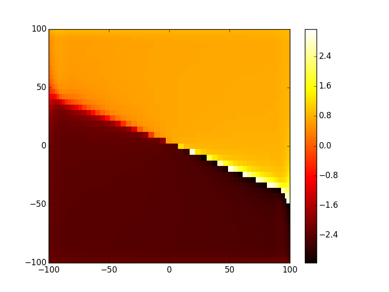
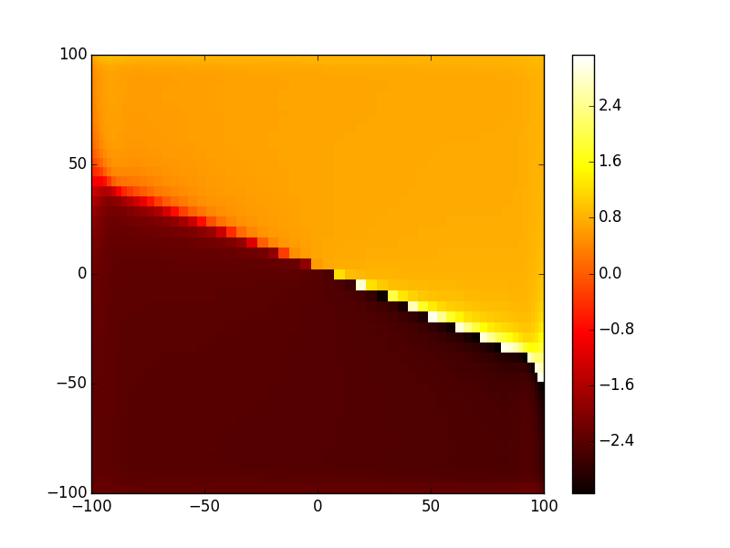

Tutorial 7 - General 2D cavity design¶
In the previous tutorials we have seen how to define and calculate the modes of a given 1D optical cavity using ABCD transfer matrix definition. Now we see how to do the same thing but to design and calculate the modes of 2D optical cavity. The system definition procedure is quite similar as shown below.
In [1]: import opencavity.modesolver as ms; #importing the opencavity module
In [2]: import matplotlib.pylab as plt
In [3]: R1=1e13; R2=10*1e3; Lc=8*1e3; npts=64; a=100; # cavity parameters
In [4]: M1=ms.np.array([[1,0 ],[-2/R1, 1]]); #concave mirror M1
In [5]: M2=ms.np.array([[1, Lc],[0, 1]]); #propagation distance Lc
In [6]: M3=ms.np.array([[1, 0],[-2/R2, 1]]); #concave mirror M2
In [7]: M4=ms.np.array([[1, Lc],[0, 1]]); #propagation distance Lc
In [8]: M=M4.dot(M3).dot(M2).dot(M1) # calculating the global matrix (note the inversed order)
In [9]: A=M[0,0]; B=M[0,1]; C=M[1,0]; D=M[1,1]
In [10]: opsys=ms.CavEigenSys() #creating a ms object
so far we are doing exactly the same thing as in previous tutorials, the change comes next: instead of using opsys.build_1D_cav_ABCD(a,npts,A,B,C,D)
we use opsys.build_2D_cav_ABCD(a,npts,A,B,C,D)
In [11]: opsys=ms.CavEigenSys() #creating a ms object
In [12]: opsys.build_2D_cav_ABCD(a, npts, A,B,C,D)
Building the kernel matrix ...
Building the kernel matrix done.
In [13]: opsys.solve_modes()
running the eigenvalues solver...
Now to see the first 4 modes Amplitude or intensity and phase profiles:
- Fundamental mode (TEM00) amplitude and phase profile:
In [14]: plt.set_cmap('hot')
In [15]: opsys.show_mode(0)
In [16]: opsys.show_mode(0,what='phase')
{kind=link}
{kind=link}
- TEM01 mode:
In [17]: opsys.show_mode(1,what='intensity')
In [18]: opsys.show_mode(1,what='phase')
 

{kind=link}
- TEM10 mode:
In [19]: opsys.show_mode(2,what='intensity')
In [20]: opsys.show_mode(2,what='phase')
{kind=link}
{kind=link}
- And finally TEM11 mode:
In [21]: opsys.show_mode(3,what='intensity')
In [22]: opsys.show_mode(3,what='phase')


To get the the round trip losses (1-abs(eigenvalue)^2):
In [23]: l,v=opsys.get_mode2D(0);# l: eigenvalue, v: eigenvector (the mode)
In [24]: (1-ms.np.abs(l)**2)*100 # in percent
Out[24]: 1.1188459936306572e-05
In [25]: l,v=opsys.get_mode2D(2);
In [26]: (1-ms.np.abs(l)**2)*100
Out[26]: 0.00017114866894818448
Using 2D cavity design offers more flexibility to simulate some effects, for example aberrations in laser mirrors, tilt, astigmatism...etc. It also allows to design cavities with advanced phase/ amplitude masks. However you should be aware that the calculation method is memory-intensive because to build the cavity kernel matrix each point in the final plane of the system need to do a double integration over all the starting plane, As explained earlier this integration is transformed to a matrix product, thus in this tutorial for example we used 64 points which means that the starting plane contains 64x64 points, and the last plane 64x64, and for each point of the first we need to create a matrix of 64x64 we end up with a matrix-kernel of 64^4 = 16777216 complex elements, which needs 32 byte each, so the matrix kernel needs 537 Mb, and using a grid of 90x90 need 2.1 Gb of memory so if you want to design a 2D system with very high resolution check that your available memory resources allow that. This said, a computer with 2Gb memory for example allows to accurately simulate most of cavities design as we will see in the next tutorials.
The cleaned code¶
# -*- coding: utf-8 -*-
import opencavity.modesolver as ms
import numpy as np #import numerical Python
R1=1e13; R2=10*1e3; Lc=8*1e3; npts=64; a=100; # cavity parameters
M1=np.array([[1,0 ],[-2/R1, 1]]); #concave mirror M1
M2=np.array([[1, Lc],[0, 1]]); #propagation distance Lc
M3=np.array([[1, 0],[-2/R2, 1]]); #concave mirror M2
M4=np.array([[1, Lc],[0, 1]]); #propagation distance Lc
M=M4.dot(M3).dot(M2).dot(M1) # calculating the global matrix (note the inversed order)
A=M[0,0]; B=M[0,1]; C=M[1,0]; D=M[1,1]
opsys=ms.CavEigenSys() #creating a Cavity eigensolver object
opsys.build_2D_cav_ABCD(a, npts, A,B,C,D)
opsys.solve_modes()
# show some modes
opsys.show_mode(0)
opsys.show_mode(0,what='phase')
opsys.show_mode(1,what='intensity')
opsys.show_mode(1,what='phase')
opsys.show_mode(2,what='intensity')
opsys.show_mode(2,what='phase')
l,v=opsys.get_mode2D(0);# l: eigenvalue, v: eigenvector (the mode)
print (1-np.abs(l)**2)*100 # in percent
l,v=opsys.get_mode2D(2);
print (1-np.abs(l)**2)*100
ms.plt.show()
Calculating the output mode¶
In a similar way to tutorial 4 in this part we propagate the fundamental mode taking the output mirror into account to get the mode shape outside the cavity. Let’s the same system as in tutorial 4

As written earlier the ABCD matrix of this optical system is given by:
Entering these matrices and calculate the global one:
In [27]: M00=ms.np.array([[1,Lc ],[0, 1]]);
In [28]: M01=ms.np.array([[1,0 ],[(1-1.5)/(-R2*1.5), 1/1.5]]);# -R2 (<0 because it is a concave interface)
In [29]: M02=ms.np.array([[1,5e3 ],[0, 1]]);
In [30]: M03=ms.np.array([[1,1 ],[0, 1.5/1]]);
In [31]: M04=ms.np.array([[1,50e3 ],[0, 1]]);
In [32]: M_out=M04.dot(M03.dot(M02.dot(M01.dot(M00))));
The difference from tutorial 4 is using propagate2D_ABCD() instead of propagate1D_ABCD() to propagate the beam.
In [33]: from opencavity.propagators import FresnelProp
In [34]: propsys=FresnelProp() #create propagator object
In [35]: l,tem00=opsys.get_mode2D(0) # get the fundamental mode of the cavity
In [36]: propsys.set_start_beam(tem00, opsys.x1) # set the beam to propagate
2D initial beam but y1 is missing..
y1 is set = x1.
In [37]: propsys.set_ABCD(M_out) # taking M2 into account
In [38]: propsys.propagate2D_ABCD(x2=10*opsys.x1) # calculate the propagation from initial plane to a plane 10 times larger (the beam is wider)
calculating Fresnel propagation...
In [39]: propsys.show_result_beam(what='intensity') # show propagation result
In [40]: propsys.show_result_beam(what='phase')